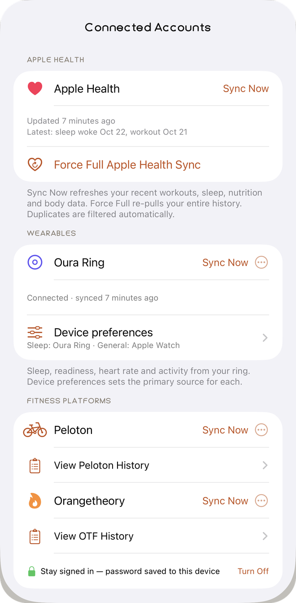
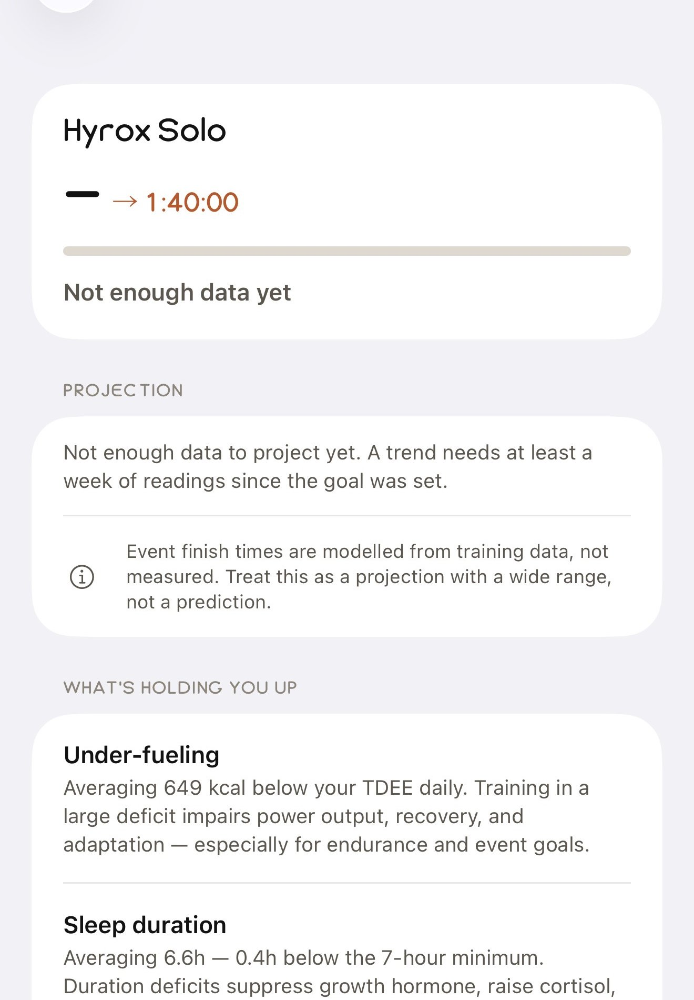
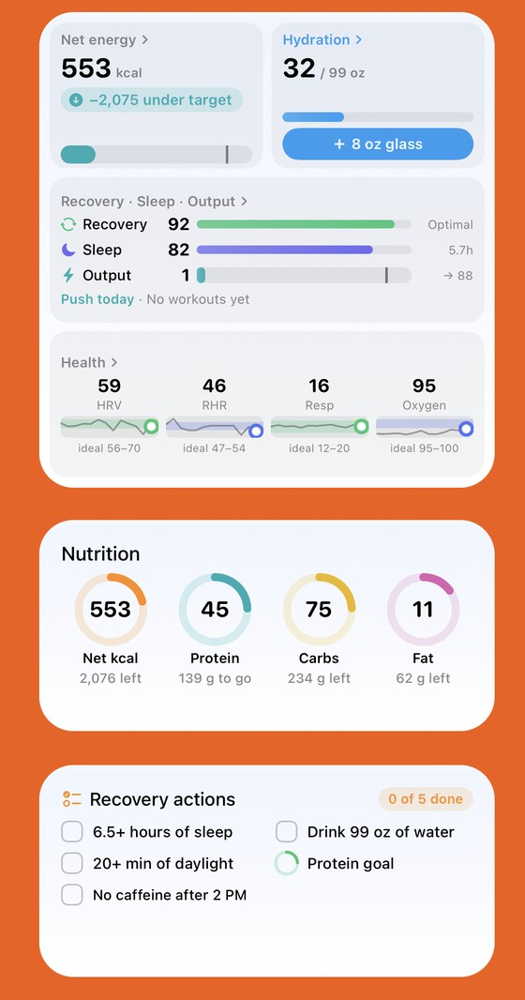
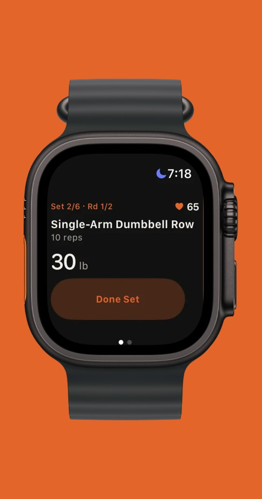
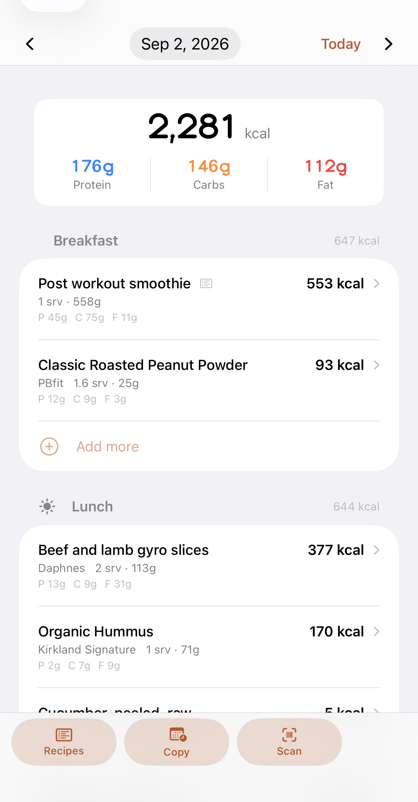
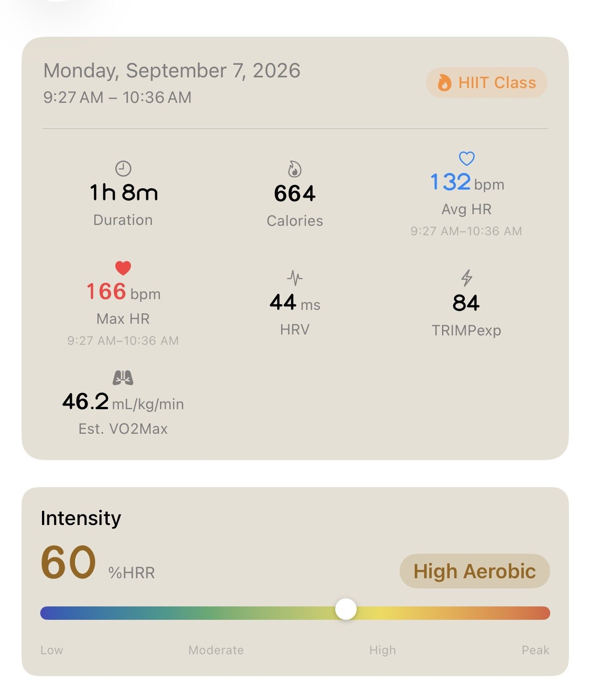
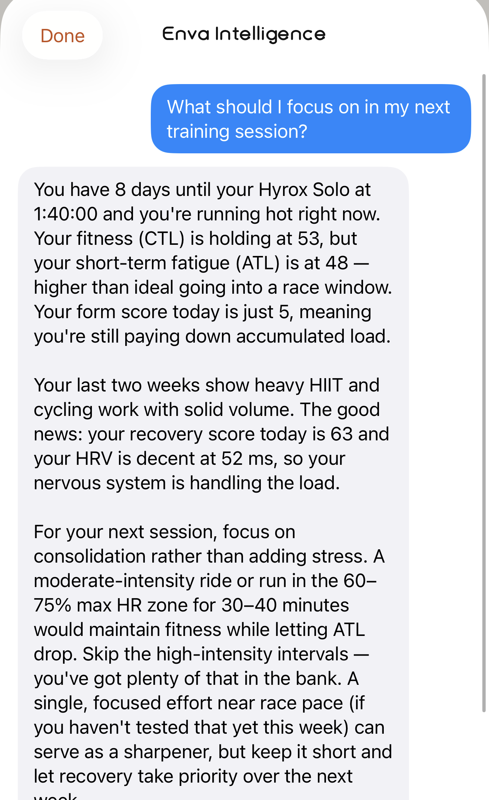
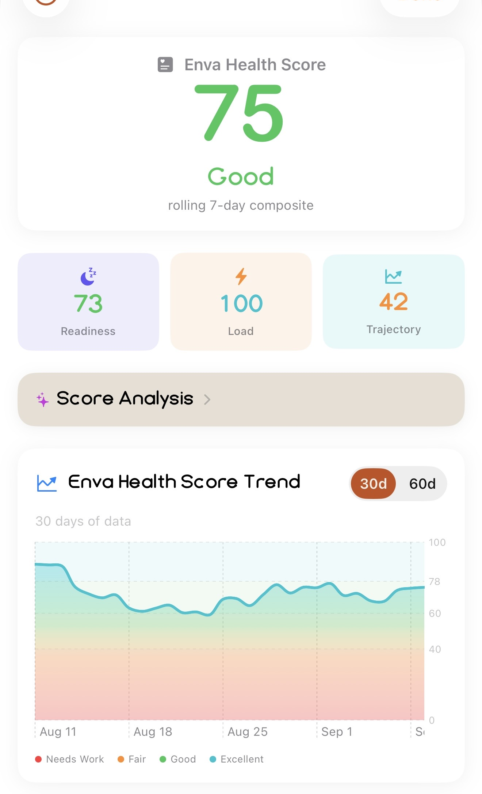
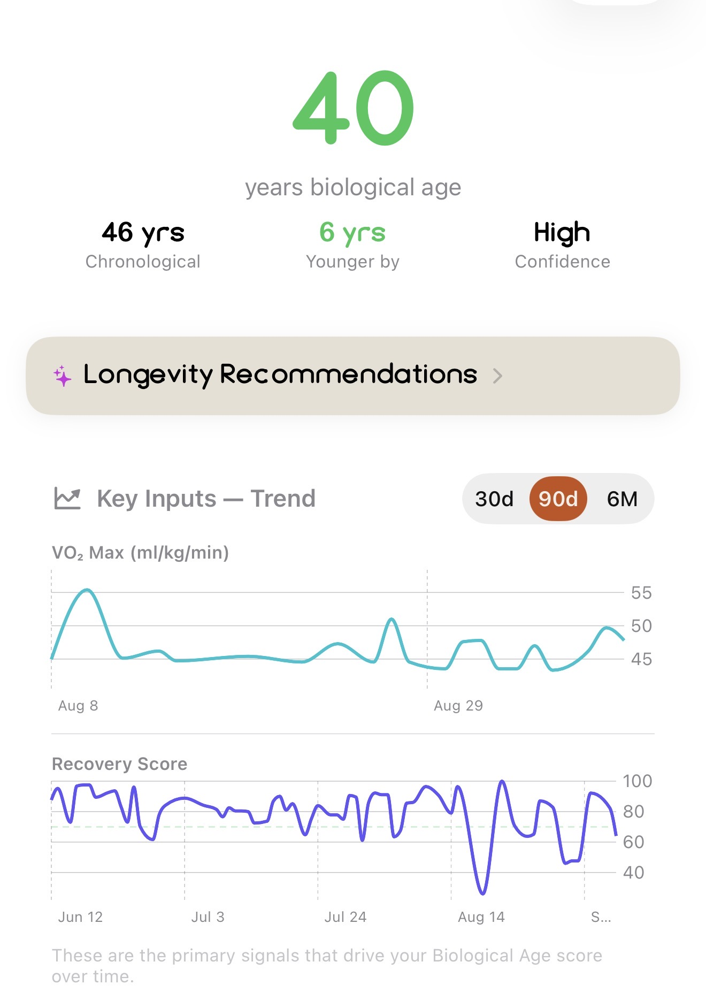

Enva does a lot. You do not need to learn all of it today. Start with the eight steps below, which take about ten minutes, then explore the rest whenever you are curious.
Build 1.0 beta • Updated October 22, 2026
Set up first, then try the rest in any order.
On Home, look at the top left. Three buttons sit side by side: the menu, the plus, and the fork and knife. Tap the + to add anything that is not a meal.
Set a Goal, Add Strength Workout, Add Bloodwork, Add Body Test, Add Supplements, Add Connection.
The same menu is on every tab, so you never have to hunt for it.
A few minutes. Everything after this builds on it.
Where Top left of Home: +, then Add Connection. Apple Health permission is asked on first launch.
Connect what you already use. Pick whatever applies. Skipping one is fine.
What you should see: a sync sheet you can dismiss, and connected sources listed in Settings.

Where Top left of Home: +, then Set a Goal.
Open Goals and pick a type: body, event, or individual. Event goals such as Hyrox shape your training phases and your daily fueling advice, so they are the quickest way to see Enva adapt.
What you should see: a phase plan and a goal card on Home.

Where Outside Enva: the Watch app on your iPhone, and your Home Screen editor.
What you should see: Enva on your watch, and a live widget on your Home Screen that matches what the app shows.


Do these in any order once you are set up.
Where Top left of Home: the fork and knife button next to the +.
Go to Nutrition and log a meal by search, barcode, or Estimate with Enva Intelligence when you only know roughly what you ate. Totals update straight away on Home.
What you should see: calorie and macro rings that move after you save.

Where Top left of Home: +, then Add Strength Workout. Templates are in the Training tab, top right.
Finish a normal session and let it sync, then open it from Training to see zones, load and recovery. Or build one in the workout builder from 13 curated templates, or let the AI wizard design it for you.
What you should see: a zone breakdown and summary for a logged session, or a saved template you can start.

Where The sparkle button on any screen.
Enva Intelligence is off until you turn it on: tap the sparkle button, then enable it, or go to Settings, then AI. Once it is on, ask something real: "Why is my recovery low today?" or "What should I eat after this workout?" It sees your scores, sleep, training and nutrition.
What you should see: insight cards unlock across the app, and the chat answers with your own numbers. Your daily message limit shows in the chat.

Where Home tab, then tap the score.
Tap the score on Home. It combines Readiness, Load and Trajectory, and shows how confident it is. Confidence is low in the first few days because Enva has seen little of your data. That is expected, not a bug, and it rises as the days go on.
What you should see: three pillar bars with a plain-language reason for each.

Where Insights tab, Biological Age card. For labs: +, then Add Bloodwork.
Open Biological Age from Home or Insights. It is built from your wearable data, and it gets sharper if you add lab results by importing from Apple Health Records, uploading a PDF, or entering values by hand.
What you should see: an age estimate with domain scores, and the markers that moved it.

Open a section. Each one lists what is there and where to find it.
These are the newest or least-tested parts of this build. If one works, you do not need to say so. If one feels wrong, report it.
Tap the thumbs up or down under any Enva Intelligence response. After a thumbs down you can open a support ticket in one tap and attach screenshots.
Take a screenshot in TestFlight (Share, then Send Beta Feedback), or use Report a bug in Settings. Either one includes your build and device automatically.
A good report says what you tapped, what you expected, and what happened instead. One sentence each is plenty.